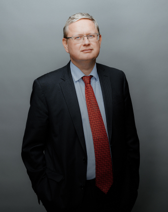
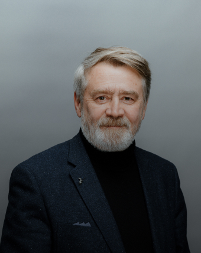

Образовательная платформа
Развивайте навыки с помощью онлайн-курсов, тренингов, конференций и форумов от лучших спикеров информационного агентства.
Ближайшие события
Форматы обучения
На платформе можно получить знания по актуальным темам от востребованных специалистов в своей области. Все курсы нацелены на получение практических знаний: мы следим за актуальностью материала и контролируем процес обучения от начала и до конца
- Курсы
- Политика
- Инвестиции
- Экономика
- Бизнес
- Кибербезопасность
- Вебинары
- Тренинги
- Семинары
- Личные консультации
Каталог курсов
Наши преподаватели:


Отзывы учеников
- Александр Воронков
- Александр Воронков
- Александр Воронков
- Александр Воронков
- Александр Воронков
«Впервые встречаю целостную, логичную и в принципе достаточно простую систему спекулятивной торговли на рынках.
Для меня наиболее важным было объяснение работы со стопами и управления капиталом. Именно на этих моментах часто терял заработанное.
Не говоря о стрессе, который раньше испытывал в процессе торговли. Очень интересно было также ознакомиться с концепциями главного движения дня и ATR, о которых раньше не слышал, хотя прочитал много литературы включая книги Аппеля и Эдлера. Спасибо за уникальную возможность ознакомиться с подходами к торговле на рынках профессионала столь высокого уровня как Игорь Тощаков»
- Инновационные идеи
- Профессиональные спикеры
- Направление для всех
- Методички в комплекте
Наши программы проходят сотрудники следующих компаний
- Министерство здравоохранения РФ